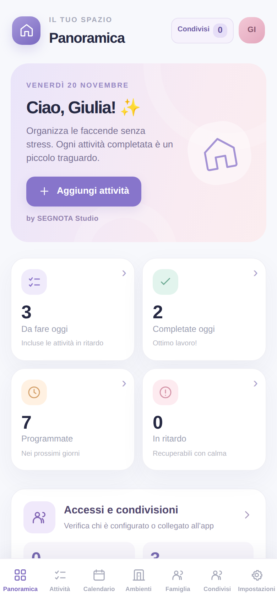
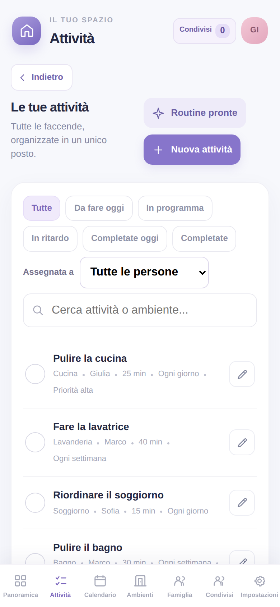
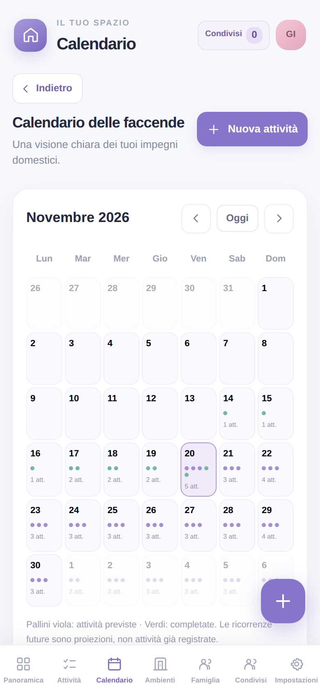
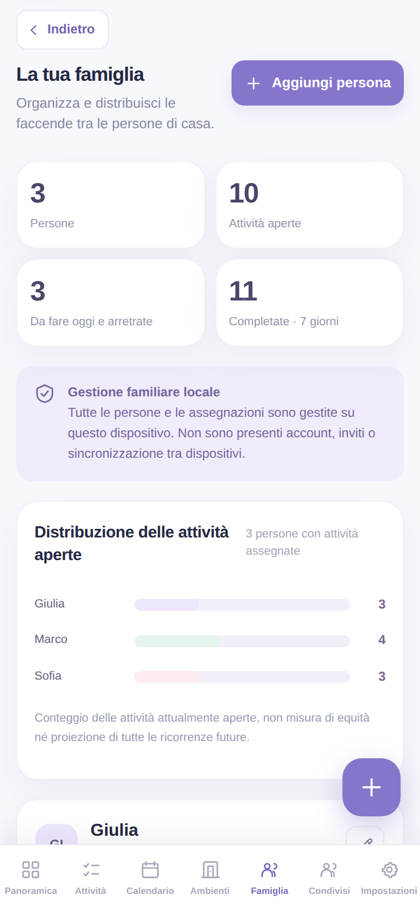
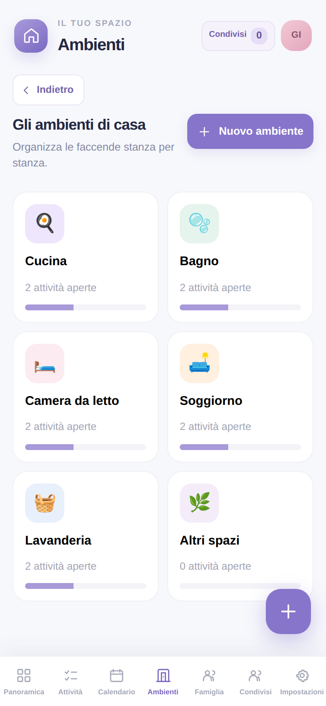
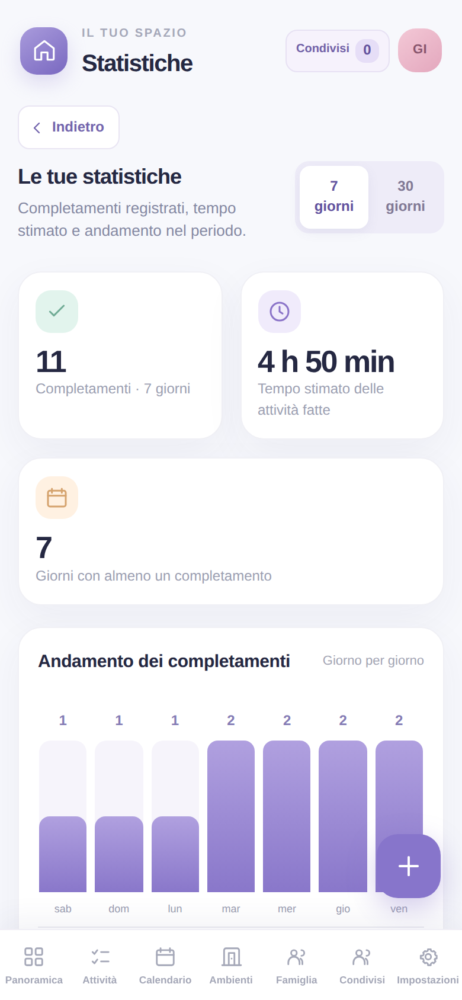
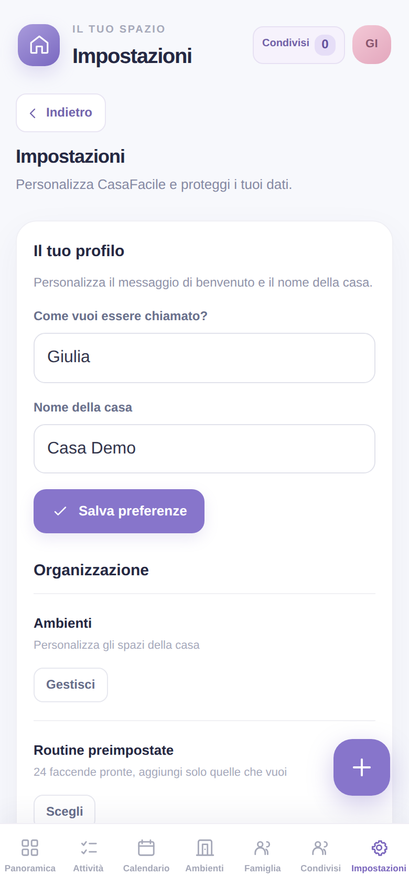
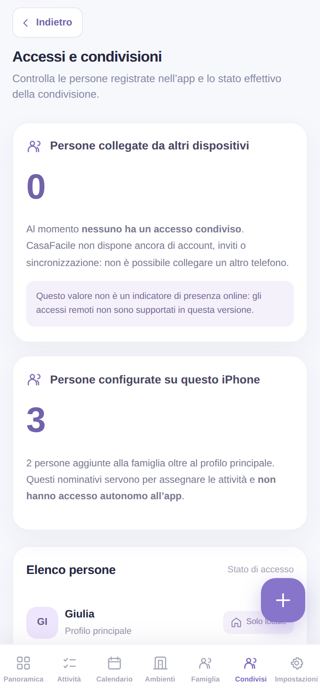

⌂CasaFacile.
LA CASA IN ARMONIA
La casa
più semplice.
Faccende, scadenze e responsabilità in un unico posto. Con leggerezza.

Per iPhone · Funziona anche offline
Faccende, scadenze e responsabilità in un unico posto. Con leggerezza.

La Dashboard raccoglie attività da fare, completamenti e prossime scadenze.
Programma attività, priorità e routine giornaliere, settimanali o mensili.


Organizza i componenti della casa e assegna le faccende a ciascuno.

Le faccende organizzate per stanza, i progressi raccontati con grafici chiari.


Funziona anche senza Internet. Esporta e ripristina un backup JSON dalle Impostazioni.

La sezione Condivisi distingue le persone configurate localmente dagli accessi remoti.

Apri CasaFacile sul tuo smartphone e scopri un modo più semplice di gestire le faccende.